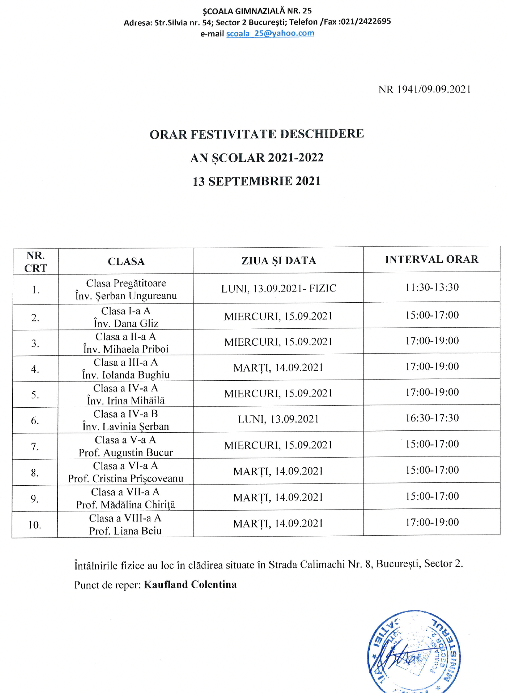
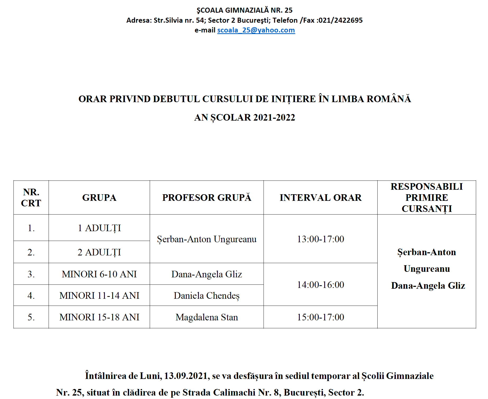
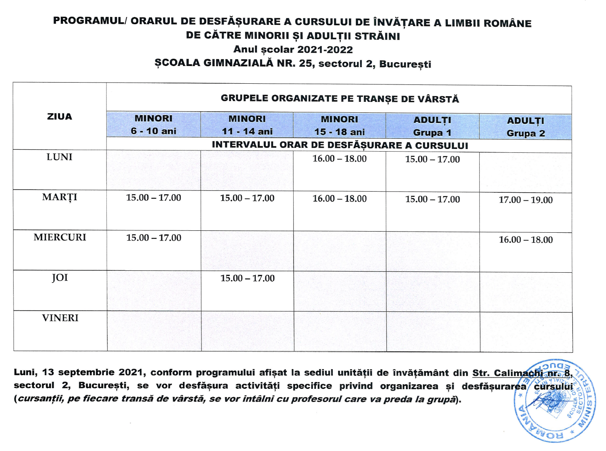

|
||||||||||||||


Anunțuri
A sosit toamna!
Începutul toamnei întotdeauna ne duce cu gândul la școală…cu pașii repezi ne îndreptăm spre începutul unui nou an școlar, care debutează Luni, 13 Septembrie 2021!
Colectivul Școlii Gimnaziale Nr. 25 vă anunță că, datorită reabilitării școlii noastre, scenariul pe care îl vom urma este online, cursurile elevilor de la clasele 0-8 se vor desfășura în această manieră până la finalizarea lucrărilor la interior!
Ne dorim să oferim un spațiu propice începerii anului școlar, dar și un spațiu sigur și conform cerințelor educaționale actuale. După toată acestă perioadă, lucrările de interior fiind estimate până la începutul lunii Octombrie, o să ne putem bucura de o școală modernă, nouă, viitor campus ce va pleda pentru o educație de calitate din partea colectivului nostru de profesori!
Puteți să ne găsiți și pe Facebook unde sunt postate toate detaliile necesare pentru fiecare clasă!
Burse - 2021-2022; Pentru informatii accesati PDF de mai jos:
Download PDF - 10 pagesProgramul secretariatului Școlii Gimnaziale Nr. 25, mutat temporar în clădirea grădiniței din Strada Calimachii 8. Punct de reper: Kaufland Colentina.
Școala Gimnazială Nr. 25 coordonează Cursurile de Inițiere în Limba Română, pentru refugiații care au dobândit o formă de protecție pe teritoriul României.
Programul zilei de Luni, 13 Septembrie, atașat în imagine, le este destinat celor care participă la cursurile de Limba Română.
Vă așteptăm cu brațele deschise pe toti cei înscriși până la data de Luni să ne cunoaștem și să interacționați cu profesorii grupelor!
 Pentru că sub egida noastră se află și preșcolarii, care urmează să înceapă grădinița de Luni, vă informăm orarul de funcționare ale celor două grădinițe ale noastre.
🖍Grădinița Calimachi, situată pe Strada Calimachii 8, Program normal-scurt
🖍Grădinița 11, situată pe Aleea Sinaia 2, Program prelungit
Așteptăm toți preșcolarii să pășească în noul an școlar! 🥳